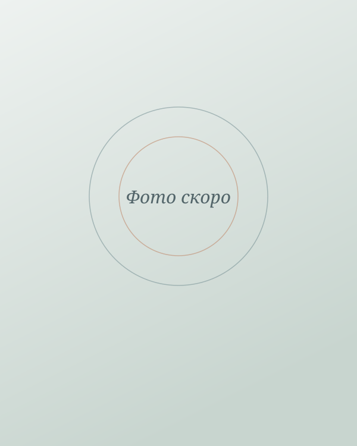

Про себя
- Со стороны всё хорошо, а внутри — «а дальше-то что?»
- Хочется понять, чего я на самом деле хочу
- Важное решение откладывается уже не первый месяц
Коуч · тренер по нейроинтеграции · ментор
Коучинг и менторинг для жизни и бизнеса. Для тех, кто ищет свой следующий шаг и хочет услышать себя.
Можно не знать наверняка и ошибаться. Я буду рядом, а шаги и успехи — ваши.

Когда пора что-то менять, но непонятно что
Можно прийти с личным вопросом или с рабочим. Всё, что нужно, — желание разобраться и интерес к собственным ответам.
Я не веду за руку и не подгоняю. Мы идём в вашем темпе, и направление выбираете вы.
Мы разговариваем на равных. Я отвечаю за процесс и атмосферу, вы — за свои решения.
Раскрыться можно только там, где безопасно. Всё сказанное остаётся между нами.
Здесь нет правильного и неправильного. В каждом человеке есть свой гений, и ваш взгляд важен.
Своё мнение я высказываю, только если вы об этом попросите. Ошибаться и сомневаться можно.
Я объясняю, как устроена работа и какие инструменты мы используем. Если какой-то подход вам не близок, мы обойдёмся без него.
Я верю, что каждый человек уже целен. Внутри есть и сила, и мудрость, и ответы. Моя задача — создать пространство, где можно снова услышать себя.
Индивидуальные сессии проходят онлайн, в Телемосте. Вживую в Петербурге — коучинговая прогулка. Начинаем всегда с бесплатной установочной встречи.
Онлайн · 60 минут
Разговор, в котором вы находите свои ответы на личный или рабочий вопрос.
Онлайн · 6 встреч за 3 месяца
Когда нужен не только вопрос, но и опыт человека, который 25 лет строил бизнес и команды.
Онлайн · 60 минут
Взгляд на 5, 10, 15 лет вперёд: куда я хочу прийти и с чего начать.
Онлайн · от 3 сессий
Для бизнес-задач: перемены в команде, запуск направления или продукта, выбор стратегии.
Вживую · Санкт-Петербург
Тот же коучинг, но в движении: на ходу мысли идут легче.
Группа · онлайн · раз в месяц
Читаем одну книгу и разбираем, что она значит лично для вас.

Всю жизнь помогаю людям расти
Меня зовут Марина. 25 лет я работаю в бизнесе, больше 20 из них — в международных компаниях: Pfizer, Johnson & Johnson, EssilorLuxottica. Всё это время рядом со мной были команды и люди. И больше всего мне нравилось создавать условия, в которых человек растёт. Некоторые из тех, с кем я работала, сегодня — коммерческие директора крупных компаний.
Коучинг для меня — продолжение того же. Он не про то, чтобы «починить» прошлое. Он про будущее: куда вы хотите прийти и какие шаги для этого есть уже сейчас.
Те, с кем я работала, часто говорят, что со мной спокойно. Наверное, потому что я никогда не делаю ничего за человека — просто остаюсь рядом, пока он пробует, сомневается и находит своё.
45 минут, чтобы познакомиться и понять, подходит ли вам коучинг и подхожу ли вам я.
Дальше вы спокойно решаете, идти ли в работу.
Записаться на бесплатную встречу:
В Telegram, WhatsApp или MAX. Отвечу в течение 24 часов.
Договоримся о времени и проведём бесплатную встречу в Телемосте.
Если решите идти дальше — выберем формат, и обычно встречаемся раз в неделю.
Психолог чаще работает с прошлым и с тем, что болит. Коучинг смотрит вперёд: куда вы хотите прийти и какие шаги к этому уже есть. Если в разговоре станет понятно, что вам сейчас нужнее психолог, я скажу об этом честно.
Друг сочувствует, советует и смотрит на вашу жизнь через свою. Я не даю советов и не оцениваю. Я задаю вопросы, которые помогают услышать себя, и веду процесс так, чтобы разговор привёл к вашему решению.
В коучинге я партнёр: задаю вопросы и держу процесс, а ответы находите вы. Своё мнение говорю, только если попросите. В менторинге я опытный коллега и делюсь тем, что знаю сама: как устроен бизнес, как строить стратегию и вести команды. В бизнес-сопровождении мы разбираем конкретную задачу и вместе ищем решение. Какой формат вам ближе, можно понять на первой встрече.
Это нормально. Для этого и есть бесплатная установочная встреча. А «не знаю» — тоже материал для работы: его можно исследовать, в том числе через метафоры.
Зависит от запроса. Обычно мы встречаемся раз в неделю: иногда хватает трёх сессий, иногда работа идёт дольше. Поэтому есть пакеты — в них каждая встреча выходит дешевле. Обсудим всё на первой встрече.
Онлайн — в Телемосте, поэтому работать можно из любой страны. В Петербурге можно встретиться вживую на коучинговой прогулке.